List of MicroSims for AP Statistics
Interactive Micro Simulations to help students learn statistics fundamentals through hands-on exploration.
-

Interactive Venn diagram for visualizing and calculating P(A or B) using the addition rule, with support for mutually exclusive events.
-
Association Detector Visualization

Interactive MicroSim for comparing conditional distributions using side-by-side 100% stacked bar charts to identify evidence of association between categorical variables.
-

An interactive MicroSim that helps students classify associations between categorical variables as strong, moderate, weak, or none by visualizing two-way tables and segmented bar charts.
-
Interactive checklist of essential formulas, condition checks, key phrases, calculator skills, and common mistakes for AP Statistics exam preparation with progress tracking and localStorage persistence.
-
Audience Communication Matcher
Drag-and-drop matching game where students learn to tailor statistical explanations to different audiences: professors, business managers, newspaper readers, and AP exam graders.
-

An interactive MicroSim where students construct bar graphs from categorical data by entering category names and frequencies, with options for vertical/horizontal orientation.
-

Interactive target diagram illustrating the difference between bias (systematic error) and variability (random error) in sampling with four scenarios.
-
Interactive exploration of the binomial distribution showing how n and p affect shape, center, and spread, with step-by-step formula calculation.
-
Interactive comparison of no blinding, single-blind, and double-blind experimental designs showing information flow and bias risk for each approach.
-
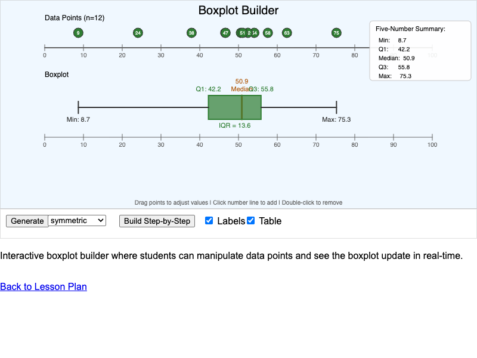
An interactive MicroSim for constructing and interpreting boxplots by connecting numerical summary statistics to their visual representation with step-by-step animation.
-
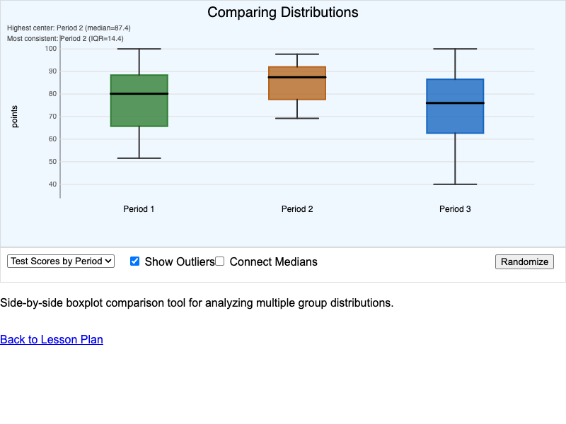
Side-by-side boxplot comparison tool for analyzing distributions across 2-4 groups with pre-loaded datasets and summary statistics.
-
Central Limit Theorem Demonstration
Interactive visualization demonstrating the Central Limit Theorem by showing how sampling distributions of means become approximately normal regardless of population shape, with multiple population types and sample sizes.
-
Chi-Square Calculation Step-by-Step
Interactive step-by-step visualization of chi-square statistic calculation with editable data, showing how each category contributes to the final statistic.
-
Chi-Square Distribution Shapes
Interactive visualization comparing how the chi-square distribution's shape changes with different degrees of freedom, with critical region shading.

An interactive concept map showing the hierarchy of key concepts in Chapter 2, including Organizing Data, Single Variable Displays, Two Variable Analysis, and Association.
-
Step-by-step interactive calculator for constructing confidence intervals for proportions, guiding students through all six steps from checking conditions to visualizing the final interval.
-
Combining Random Variables Visualizer
Interactive visualization showing how means and variances combine when adding or subtracting independent random variables, demonstrating that variances always add.
-
Interactive demonstration showing that the confidence level represents the long-run proportion of intervals that capture the true parameter through repeated sampling.
-
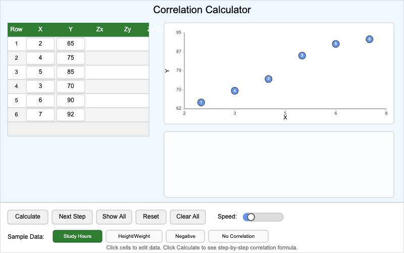
Step-by-step correlation coefficient calculator showing intermediate values, z-scores, and the complete calculation process with real-time scatterplot updates.
-

Interactive demonstration of common correlation mistakes including nonlinear data, outlier effects, restricted range, and confounding variables.
-
Correlation Properties Explorer

Explore correlation properties by dragging points, toggling outliers, swapping axes, and changing units to see how the correlation coefficient responds.
-
Interactive visualization showing how z* critical values correspond to areas under the standard normal curve for different confidence levels.
-
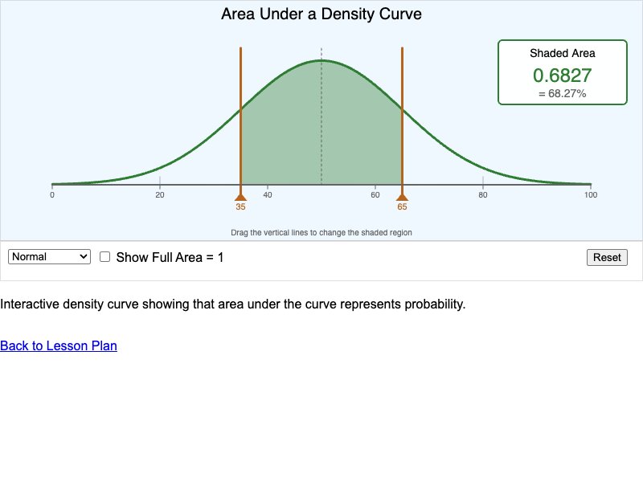
Interactive visualization showing that area under a density curve represents probability, with draggable boundary lines and multiple curve types.
-
Discrete vs Continuous Number Line

An interactive MicroSim that helps students distinguish between discrete and continuous variables by visualizing how values can be plotted on a number line.
-

An interactive infographic showing three types of distribution shapes - unimodal, bimodal, and uniform - with real-world examples, hover tooltips, and a quiz mode.
-

Interactive demonstration of the 68-95-99.7 rule for normal distributions with animated regions and real-world examples.
-
Interactive decision flowchart guiding students through the process of designing a complete experiment from research question to final design.
-
Experimental Designs Comparison
Interactive comparison of completely randomized, randomized block, and matched pairs experimental designs with animated random assignment.
-
Interactive visualization showing how Cohen's d effect size relates to the visual separation and overlap between two normal distributions with adjustable slider.
-
Interactive calculator for computing the expected value of discrete random variables with step-by-step calculation display and real-time validation.
-
Interactive tree diagram showing how factors and levels combine to create experimental treatments in a 2-factor experiment design.
-

An interactive MicroSim where students practice calculating relative frequencies and percentages from raw frequency data using adjustable sliders.
-
Interactive flowchart guiding students through the STATE, PLAN, DO, CONCLUDE process for statistical inference with mode toggle for hypothesis tests and confidence intervals.
-
Interactive concentric circle diagram visualizing levels of generalizability from a specific sample outward to broader populations, with scenario toggling.
-
Geometric Distribution Simulator
Interactive simulation that runs trials until first success, building up the geometric distribution empirically and comparing to theoretical probabilities.
-
Complete interactive chi-square goodness-of-fit test simulator with editable data, preset examples, automatic calculations, and visual results interpretation.
-

Correlation estimation game where students guess r-values from scatterplots, building intuition for what different correlation strengths look like.
-
Interactive Histogram Explorer

An interactive MicroSim where students examine how changing bin width affects histogram appearance, with multiple datasets and display options.
-

Interactive MicroSim that visualizes the book task graph and highlights remaining work.
-
Homogeneity vs Independence Comparison
Side-by-side comparison of chi-square tests for homogeneity and independence with visual sampling diagrams and an interactive quiz with real-world scenarios.
-
Household Income Boxplot Explorer

Interactive MicroSim that uses a boxplot to summarize household incomes and highlight right-skew.
-
Hypothesis Testing Decision Flowchart

Step-by-step interactive flowchart guiding students through the complete hypothesis testing procedure from stating hypotheses to making conclusions.
-
Interactive infographic showing how sampling distributions connect samples to populations in the statistical inference process, with paths for both confidence intervals and hypothesis tests.
-
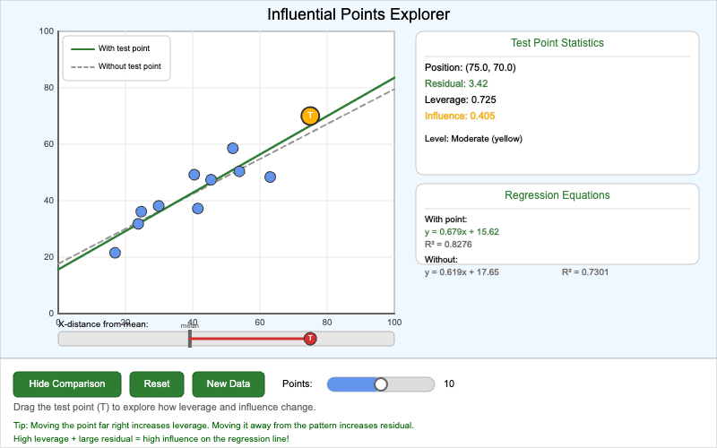
Investigate how high-leverage and outlier points affect regression lines by dragging a test point and comparing results with and without it.
-

An interactive MicroSim where students click on a number line to add data points and construct a dotplot, demonstrating how dotplots visualize quantitative data.
-
Law of Large Numbers Demonstrator

Interactive visualization demonstrating how empirical probability converges to theoretical probability as the number of trials increases.
-

Interactive visualization showing how the least squares method finds the best-fit regression line by minimizing squared residuals with draggable data points.
-
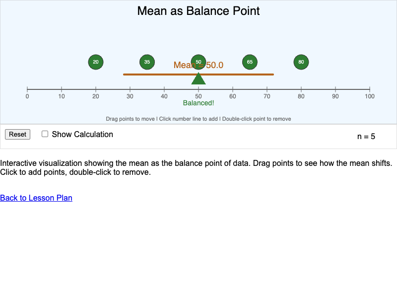
Interactive visualization showing the mean as the balance point of a distribution, with draggable data points and real-time mean calculation.
-
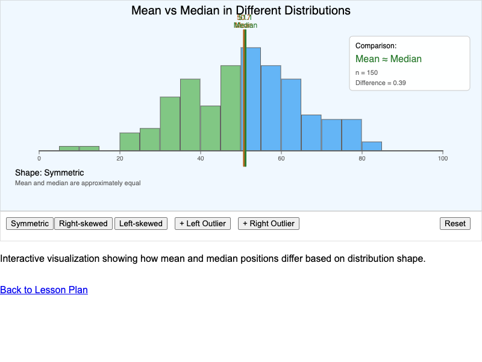
Interactive visualization showing how mean and median positions differ based on distribution shape, with outlier buttons to demonstrate resistance.
-
Interactive visualization showing how confidence level, sample size, and sample proportion affect the margin of error and confidence interval width.
-

Interactive visualization showing how mean (μ) and standard deviation (σ) affect the shape and position of a normal distribution curve.
-

Interactive calculator for computing probabilities from normal distributions with draggable boundary markers and step-by-step solutions.
-
Normal Probability Plot Explorer

Interactive visualization for assessing normality using histograms and QQ plots with multiple distribution types and sample sizes.
-
One-Sample T-Interval Calculator
Step-by-step calculator for constructing one-sample t confidence intervals for a population mean, with visual representation and proper interpretation.
-
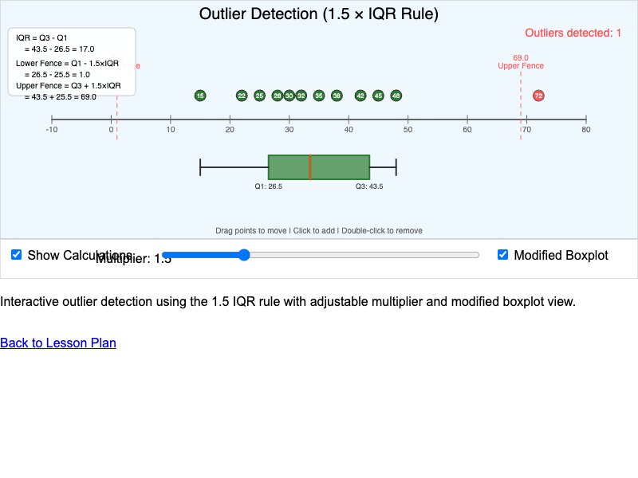
Interactive visualization of the 1.5 × IQR rule for identifying outliers with adjustable multiplier and fence calculations.
-

An interactive game where students identify outliers in real-world datasets by examining visual separation in dotplots and histograms.
-

Interactive visualization of p-values as shaded areas under the standard normal distribution for one-sided and two-sided hypothesis tests.
-
Paired vs Independent Data Guide
Interactive flowchart and practice quiz to help students determine whether data requires paired or independent samples t-procedures.
-
Parameter vs Statistic Comparison

An interactive MicroSim demonstrating the difference between population parameters and sample statistics, showing how statistics vary while parameters remain fixed.
-

Classify scatterplots by their form: linear positive, linear negative, nonlinear, or no association. Features a gallery of thumbnails with instant feedback.
-
Pie Chart vs Bar Graph Comparison

An interactive MicroSim that displays the same data as both a pie chart and bar graph, helping students analyze when each visualization type is most effective.
-
Population and Sample Visualization

An interactive MicroSim that demonstrates the relationship between a population and a sample by letting students select individuals from a population.
-
Interactive visualization comparing point estimates (single values) and interval estimates (confidence intervals) for population proportions through repeated sampling.
-
Probability Distribution Bar Chart
Interactive bar chart showing the probability distribution for rolling a fair six-sided die, demonstrating that each outcome has equal probability of 1/6.
-

Interactive simulation for estimating probabilities through repeated trials, demonstrating how empirical probability converges to theoretical probability.
-
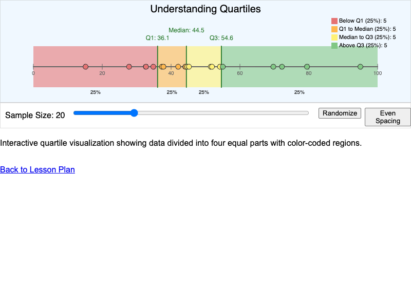
Interactive visualization showing how quartiles divide data into four equal parts with color-coded regions and adjustable sample size.
-

Interactive simulation demonstrating how question wording dramatically affects survey responses through neutral, positive, and negative framings.
-
Interactive simulation for practicing random assignment of experimental units to treatment groups using a chance mechanism.
-

Interactive simulation for practicing simple random sampling using a random digit table with step-by-step selection process.
-
Interactive concept map showing relationships between all random variable concepts including probability distributions, expected value, variance, and binomial/geometric distributions.
-
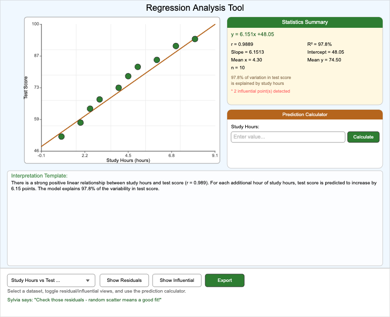
Complete regression analysis dashboard with scatterplot, residual plot, statistics panel, and prediction calculator for comprehensive data analysis.
-
Interactive tool for evaluating LINE conditions for regression inference by analyzing scatterplots, residual plots, and histograms with immediate feedback.
-

Interactive visualization for computing and understanding regression residuals, showing the vertical distance between actual data points and predicted values.
-
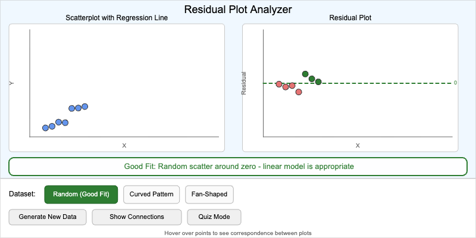
Side-by-side scatterplot and residual plot display for evaluating whether a linear model is appropriate by analyzing residual patterns.
-

Interactive MicroSim where students classify distributions as symmetric, skewed left, or skewed right by examining histograms with real-world contexts.
-
Interactive visualization for constructing and interpreting confidence intervals for regression slopes with coverage simulation showing interval capture rates.
-
Interactive visualization showing how sample regression slopes vary under repeated sampling and form a distribution around the true population slope.
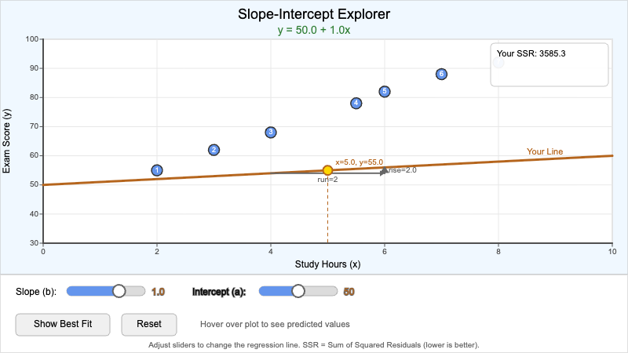
Manipulate slope and y-intercept sliders to see how changes affect the regression line and predictions, with comparison to the best-fit line.
-

An interactive MicroSim where students compose complete distribution descriptions using the SOCS framework (Shape, Outliers, Center, Spread).
-
Interactive calculator for determining the sample size needed to achieve a desired margin of error for confidence intervals about proportions.
-

Interactive visualization for exploring sample spaces of common probability experiments including dice rolls, coin flips, and card draws.
-
Sample Size and Margin of Error Explorer
Interactive visualization demonstrating the relationship between sample size and margin of error for proportions, showing the diminishing returns of larger samples.
-
Sampling Distribution Calculator
Interactive calculator for finding probabilities involving sample means or proportions, with step-by-step solutions showing standard error, z-score, and probability calculations.
-
Interactive visualization showing how taking many samples and calculating a statistic from each creates a predictable sampling distribution, with dynamic histogram building.
-

Build scatterplots interactively by clicking data rows to plot points. Features multiple datasets and customizable axis labels.
-
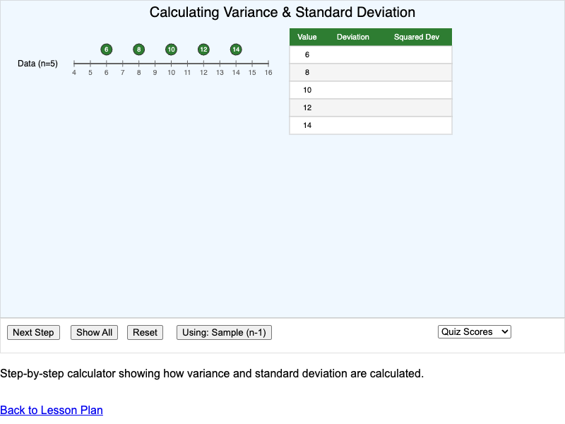
Step-by-step variance and standard deviation calculator showing the complete calculation process with visual representation.
-
Interactive visualization showing how sample size affects the standard error of sampling distributions for both proportions and means, with real-time formula calculations.
-
Statistical vs Practical Significance Matrix
Interactive 2x2 decision matrix helping students distinguish between statistical and practical significance by clicking quadrants to explore examples of trivial effects, meaningful discoveries, and more.
-

An interactive MicroSim where students interpret how data values decompose into stems and leaves to build a stemplot visualization.
-
Stratified vs. Cluster Sampling

Interactive visualization comparing stratified and cluster sampling methods, showing how each selects individuals from groups differently.
-

Interactive concept map showing how foundational statistics concepts connect in the context of a real research study about sleep and academic performance.
-

Interactive tool for evaluating survey quality by identifying sampling and question design problems in real-world scenarios.
-
Symmetric Distribution Identifier

An interactive quiz MicroSim where students learn to recognize symmetric and asymmetric distributions by comparing histogram shapes.
-

Interactive MicroSim that uses boxplots to summarize exam scores and compare two class sections.
-

Interactive calculator for computing z-test statistics in one-proportion hypothesis tests with step-by-step calculations and conditions checking.
-
Three Principles of Experiment
Interactive infographic showing Control, Randomization, and Replication as foundational principles of experimental design with visual demonstrations.
-
Step-through visualization demonstrating why control groups are essential for valid conclusions in experimental research.
-
Find t critical values for different degrees of freedom and confidence levels, with visualizations for both confidence intervals and hypothesis tests.
-
T-Procedure Robustness Exploration
Simulation-based exploration of how well t-procedure confidence intervals perform with different population shapes and sample sizes.
-
T vs Normal Distribution Comparison
Interactive visualization comparing t-distributions with different degrees of freedom to the standard normal distribution.
-
Two-Proportion Z-Test Calculator

Complete two-sample z-test calculator for comparing proportions between independent groups with visual comparison and conclusion generator.
-
Two-Sample T-Test Visualization
Compare two group means with visual dotplots, confidence interval for the difference, and complete hypothesis test results using Welch's unpooled t-test.
-

An interactive calculator for computing marginal and conditional distributions from a two-way (contingency) table with editable cells.
-
Type I and Type II Error Visualizer

Interactive simulation demonstrating Type I (false positive) and Type II (false negative) errors with cumulative error rate tracking.
-

Interactive visualization showing how incomplete sampling frames lead to biased estimates with adjustable undercoverage and group differences.
-

An interactive concept map showing the hierarchy of variable types in statistics, including categorical and quantitative variables.
-
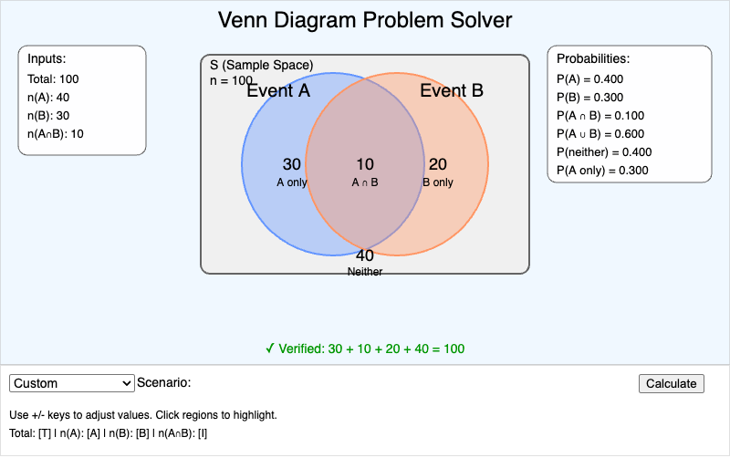
Interactive tool for solving probability problems using Venn diagrams, calculating counts and probabilities for overlapping events.
-

Interactive z-score calculator and visualizer showing value position on a normal distribution curve with real-world presets.